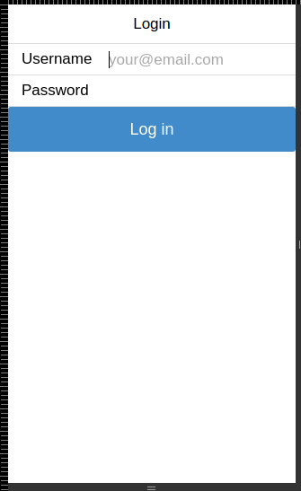

Sun, 22 Feb 2015
I think that connecting mobile workers is still missing chapter in Odoo book, when a saw ratchet i had no more doubts on how to solve this problem. Ratchet is a simple javascript framework that realy requires litle javascript coding to make it work.
see the goratchet.com website.
Thought it would be nice to have a timesheet webapp so that i could log time in my contracts using phone. So, i started coding and this was the result:
Now you can find this particulariy usefull app in Odoo App Store.
Later on i thought that are more nice use cases for this and so i had the idea of separating the module and create mobile and mobile_sample.
I pushed into github https://github.com/diogocduarte/odoo-mobile, so if you want to join the project just drop me a line.
I’ve been enhancing the base and now it’s possible to have it’s own login screen.
This looks like a real phone application, just need to have an icon link in your mobile home screen. I used this with a hosted instance i have running and it’s quite fast! Sometimes i even forget it’s hosted .)
If you don’t know how to, here is a link to follow:
Next projects are creating a timesheet module that will allow booking time into project tasks. Also done mobile CRM enabling you to bring your leads and opportunities in the pocket.